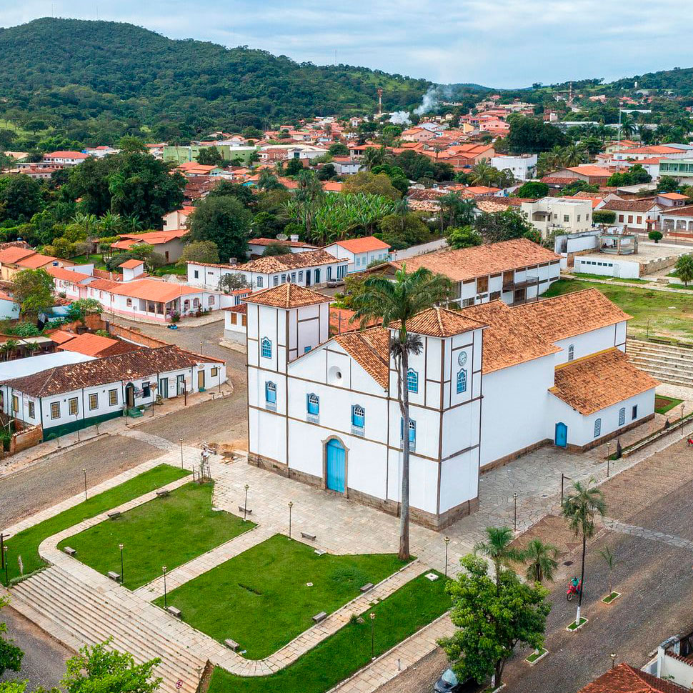
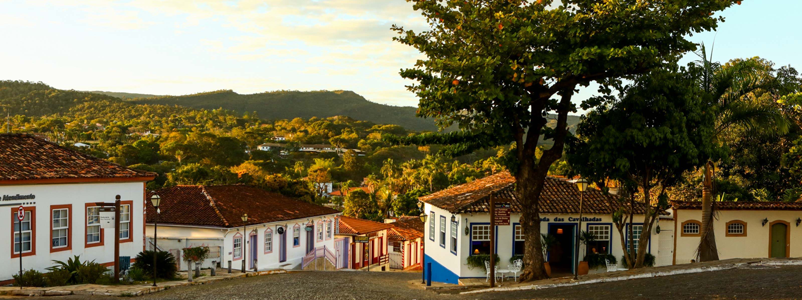
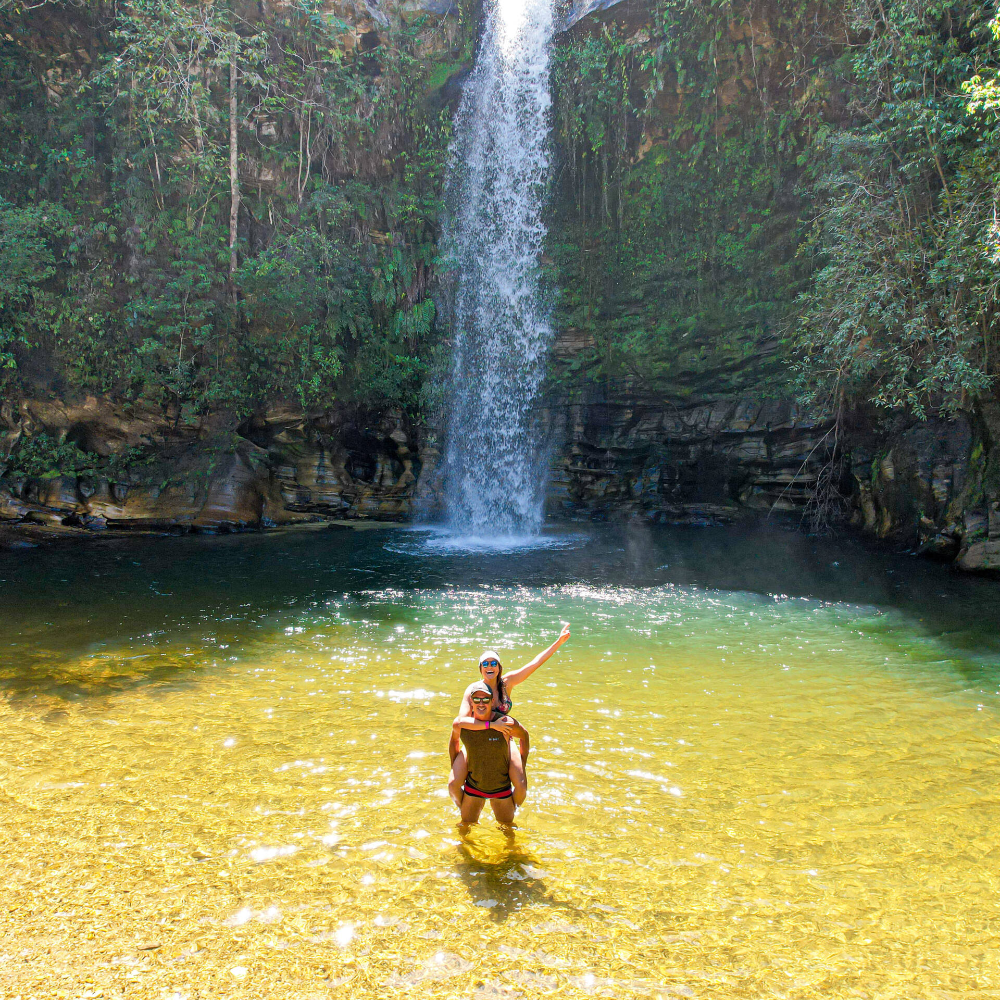
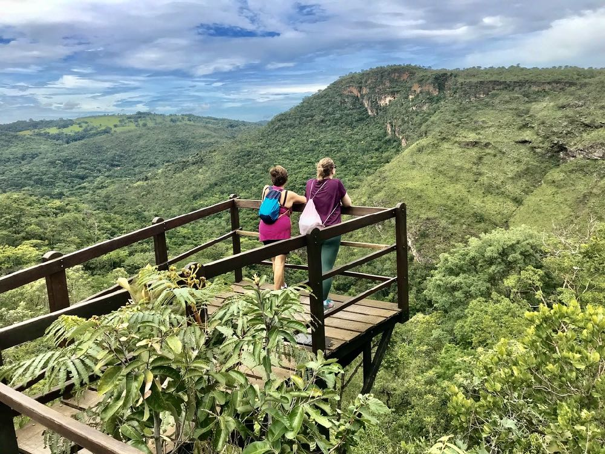
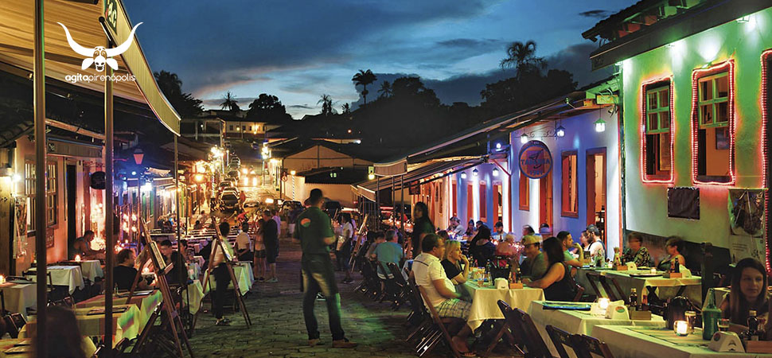

Descubra Pirenópolis: Tesouro Histórico e Natural de Goiás
Descrição do Local – Pirenópolis, GO
📍 Pirenópolis, Goiás é uma charmosa cidade histórica no coração do Brasil, conhecida por sua
arquitetura colonial, cachoeiras deslumbrantes e forte influência cultural. Fundada no século XVIII
durante o ciclo do ouro, a cidade preserva seu patrimônio e encanta visitantes com sua atmosfera tranquila
e acolhedora.
O que torna Pirenópolis especial?
✅ Centro Histórico – Ruas de pedra, casarões coloniais e igrejas centenárias, como a famosa Igreja Matriz de Nossa Senhora do Rosário.
🌿 Natureza e Cachoeiras – Destino perfeito para quem busca aventura e contato com a natureza. Entre as mais conhecidas estão a Cachoeira do Abade, Cachoeira dos Dragões e Cachoeira do Rosário.
🎭 Cultura e Tradições – A cidade é palco da tradicional Festa do Divino Espírito Santo, reconhecida como Patrimônio Cultural pelo IPHAN.
🛍️ Artesanato e Gastronomia – Feira de artesanato, lojas de produtos locais e pratos típicos, como empadão goiano e doces caseiros.
Pirenópolis é o destino ideal para quem deseja relaxar, explorar belezas naturais e mergulhar na história de Goiás! ✨





O que Fazer em Pirenópolis, GO
Pirenópolis é um destino que combina história, aventura, cultura e gastronomia, oferecendo diversas
opções para todos os tipos de visitantes. Confira algumas das melhores atividades para aproveitar ao
máximo sua viagem!
🏛️ Explorar o Centro Histórico
Passeie pelas ruas de pedra e admire a arquitetura colonial preservada. Visite a Igreja Matriz de Nossa
Senhora do Rosário, uma das mais antigas de Goiás, e descubra museus e casarões históricos que contam
a história da cidade.
🌿 Visitar Cachoeiras e Trilhas
A cidade é cercada por cachoeiras deslumbrantes e trilhas ideais para quem ama ecoturismo. Algumas das mais famosas são:
✅ Cachoeira do Abade – Perfeita para banho e trilhas leves.
✅ Cachoeira dos Dragões – Um conjunto de oito quedas incríveis.
✅ Cachoeira do Rosário – Com uma vista espetacular e ótima estrutura.
🎭 Participar da Cultura e Tradições Locais
Se sua visita for entre abril e junho, não perca a Festa do Divino Espírito Santo, um dos eventos
culturais mais tradicionais do Brasil, com desfiles, música e celebrações religiosas.
🚴♂️ Praticar Esportes de Aventura
Pirenópolis é um ótimo destino para quem busca adrenalina! Você pode fazer:
🍽️ Degustar a Gastronomia Goiana
A culinária local é um atrativo à parte! Experimente:
🛍️ Comprar Artesanato e Souvenirs
Visite as feiras e lojas de artesanato para levar lembranças únicas, como peças de cerâmica, joias de
prata e tecelagens típicas da região.
✨ Seja para relaxar ou se aventurar, Pirenópolis é o destino perfeito para quem busca natureza,
cultura e boa gastronomia!